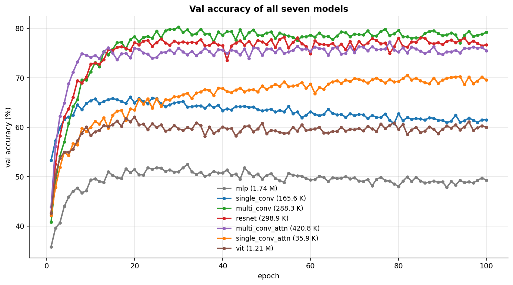
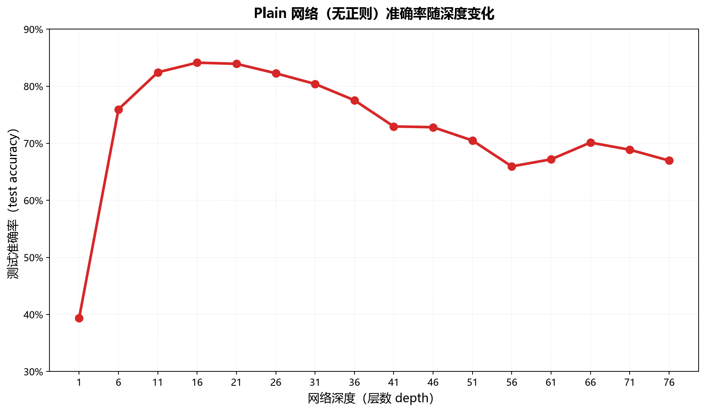
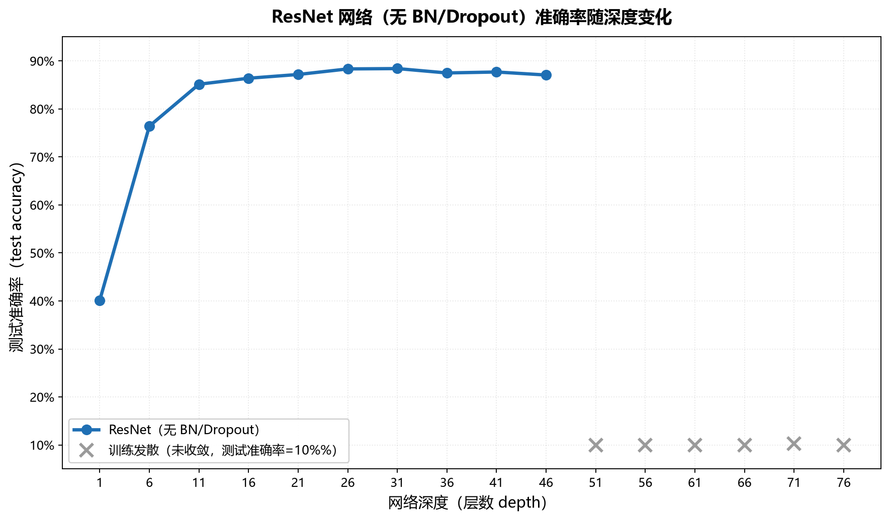
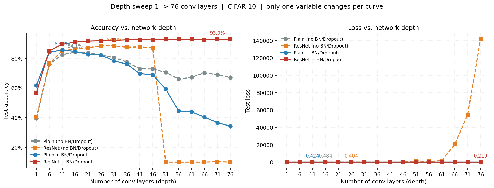
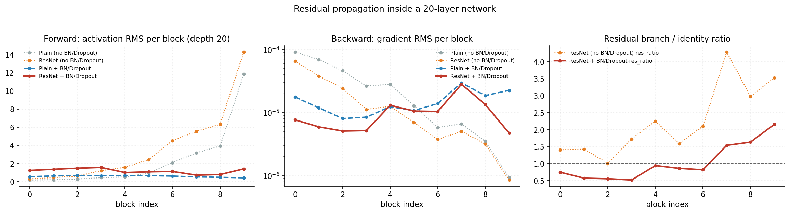
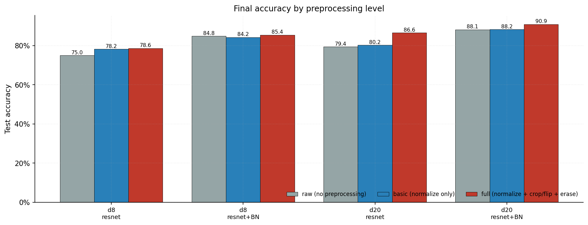

与cifar-10的战斗：初步入门图像识别
通过解决cifar-10数据集识别准确性为主线，学习神经网络#
前言#
在本篇博客，笔者先是尝试了各种模型对于cifar-10数据集的识别准确率，并在之后着重研究多层resnet，并以其为抓手，深入学习其背后的工程理论和数学原理
本博客中部分内容由AI辅助完成。
初入：试探性的使用多个模型检验效果#
在最开始 笔者并不知晓什么模型适合来作为本项目的深入研究模型 笔者恰好听过cnn resent vit等等词语 不如就用他们全部测试一遍 在这里笔者定义了如下七个模型
| 网络结构 / 参数量 | |
|---|---|
| 1. MLP | 输入 (B,3,32,32) → Flatten → (B,3072) → Linear 3072→512 + ReLU → Linear 512→256 + ReLU → Linear 256→128 + ReLU → Linear 128→10；无卷积、无池化、无归一化；参数量 1,738,890 |
| 2. 单层 CNN | 输入 (B,3,32,32) → Conv2d(3→64, 3×3, s1, p1) + ReLU → (B,64,32,32) → MaxPool2d(2) → (B,64,16,16) → Flatten → (B,16384) → Linear 16384→10；卷积 bias=True、无 BN；参数量 165,642（其中卷积层 1,792） |
| 3. 多层 CNN | stage1: Conv(3→32)+ReLU, Conv(32→32)+ReLU @32×32 → MaxPool → (B,32,16,16)；stage2: Conv(32→64)+ReLU, Conv(64→64)+ReLU @16×16 → MaxPool → (B,64,8,8)；stage3: Conv(64→128)+ReLU, Conv(128→128)+ReLU @8×8 → MaxPool → (B,128,4,4) → AdaptiveAvgPool2d(1) → (B,128) → Linear 128→10；共 6 个 3×3 卷积，无 BN、无残差；参数量 288,298 |
| 4. ResNet | stage 划分、通道、池化位置、GAP、FC 与模型 3 相同，把每对卷积封装为残差块：out = ReLU(conv2(ReLU(conv1(x))) + shortcut(x))，shortcut 在形状一致时为 Identity、通道或分辨率变化时为 1×1 Conv；链路为 ResidualBlock(3→32) → MaxPool → ResidualBlock(32→64) → MaxPool → ResidualBlock(64→128) → MaxPool → (B,128,4,4) → GAP → Linear 128→10；无 BN；参数量 298,858（多出的 10,560 为 3 个 shortcut 投影卷积） |
| 5. CNN + Attention 头 | backbone 与模型 3 相同：stage1/2/3 → (B,128,4,4) → flatten(2).transpose(1,2) → (B,16,128) → 1 个 Pre-LN Transformer 块（x = x + MHSA(LN(x))；x = x + MLP(LN(x))，dim=128，heads=4，MLP hidden=256，GELU）→ (B,16,128) → mean(dim=1) → (B,128) → Linear 128→10；参数量 420,778 |
| 6. 单层 CNN + Attention 头 | backbone 与模型 2 相同：Conv2d(3→64, 3×3)+ReLU → MaxPool2d(2) → (B,64,16,16) → flatten(2).transpose(1,2) → (B,256,64) → 1 个 Pre-LN Transformer 块（dim=64，heads=4，MLP hidden=128）→ (B,256,64) → mean(dim=1) → (B,64) → Linear 64→10；参数量 35,914 |
| 7. ViT | PatchEmbed: Conv2d(3→128, k=4, s=4) → (B,128,8,8) → flatten(2).transpose(1,2) → (B,64,128)；拼接 [CLS] → (B,65,128)，加可学习位置编码（trunc_normal, std=0.02）；6 个 Pre-LN Transformer 块（dim=128，heads=4，MLP hidden=512）→ (B,65,128) → LayerNorm → 取 CLS → Linear 128→10；除 patch 投影外无卷积；参数量 1,205,898 |
经过大概100epochs的训练 我们可以简单的观察一下实验结果

可以简单看到mlp在这这种复杂的的任务中已经难以招架，而resnet，多层cnn和多层cnn+attntion则快接近百分之八十 暂且可以认为 在这个数据大小和模型层数下 多层cnn可以极大的提高cifar-10数据集的识别率 这里的vit和attention将在之后的任务中深入研究 今天笔者想要了解一下图像领域的经典架构--cnn和resnet什么是卷积#
cnn即卷积神经网络 他的概念首先来自一个数学概率 即卷积函数
- 翻转：\(g(\tau) \mapsto g(-\tau)\)
- 平移：\(g(-\tau) \mapsto g(t-\tau)\)，中心在 \(\tau = t\)
- 相乘：\(h_t(\tau) = f(\tau)\,g(t-\tau)\)，只保留重叠区
- 积分：\((f*g)(t) = \int h_t(\tau)\,\mathrm{d}\tau\)，即重叠加权面积
几何本质：t 滑动时，(f*g)(t) 记录的是 f 与"翻转后滑动窗口 g"的重叠面积。
其具体的更细致的理解可以去观看3Blue1Brown的卷积可视化
在我们图像处理中的卷积则一般运用二维离散卷积
笔者来看 这个公式的直观理解为一个长宽为H和W的矩阵在图像矩阵上不断移动 每移动一次 就求一次点积放到一个新的矩阵上 最后产生一个新的矩阵。
这个矩阵也就是我们所说的卷积核，这个函数也就是我们卷积神经网络中的卷积层的核心，此外卷积神经网络还要一个池化层 对矩阵进行分割 从而降维 减少我们需要的计算量 二者组成我们的卷积神经网络。
这个网络设计来自现代图像处理的开山鼻祖之一AlexNet
那么为什么这个结构如此适合图像处理任务呢 按照之后的研究 通过逐层分析 每一层卷积核都对图像的某一模式进行特化识别 例如 某一层卷积可以对边缘特化 将边缘强调提取 某一层可以对人脸特化 将五官进行特化提取（此处仅为个人方便理解，按照之后的研究 具体的提取可以不像笔者的描述如此具体 而是算法自主选择的特征）
反向传播的实现#
新的损失函数#
笔者 在这里又回到第一章探讨的的问题 在上一章中我们实验MSE（均方误差）来实现模型效果的评估，在这一章中我们将使用交叉熵损失进行模型评估
交叉熵损失来源自信息论，对于本人而言，我更喜欢将他的一个拆解式子
这里的 H(p) 也就是所谓的香农熵，一件事情的发生概率发生概率越小，在信息论中携带的信息越大 即 所谓的惊喜程度越大，而 KL(p|q) 则是所谓的KL散度是用来权衡两个概率分布的差异，这里可以简单分析出KL散度的两种模式运用 即正向 KL和反向 KL
正向KL
他是一种 mean-seeking 着重去覆盖目标概率分布的所有模式，避免漏掉某一质量，让 q 尽量覆盖 p 的所有高概率区域。
反向KL
他是一种 mode-seeking 他着重惩罚p覆盖到q不存在的地方这一行为，避免多选，让 q 只待在 p 的高概率区域里。
这两个模式，代表了两种任务，正向一般用于学习真实分布、最大似然、分类、语言模型、密度估计等等需要全面考虑的事情，
反向则用于变分推断、VAE、策略约束等只要一个模式的近似的任务。
在梯度传递的过程中，因为香农熵是一个固定参数，不需要考虑，所以交叉熵的梯度传递结果和KL散度一致，此外 可以在数学上简单证明。
最大似然估计等于最小交叉熵损失
最大似然估计的最大值，也就是统计学意义上的最优曲线，所以交叉熵损失达到最小值，也就是拟合曲线最优的适合。
在实际使用中 我们一般配合softmax归一化一起使用
softmax可以将所有的输入住归一化即加起来结果为，并保证所有的值都是正数。
使用交叉熵损失相比MSE，他的梯度性质更好，避免输出层饱和在softmax边界位置可以更快下降，防止下降太慢或者梯度消失。
卷积的反向传播#
- 卷积反向传播推导
设损失为 \(L\)，卷积输出为 \(Y\)，上游传回来的梯度是：
我们要求：
为了简单，先看单通道、stride=1、无 padding 的二维互相关：
1.1 对权重 \(W\) 求导
由链式法则：
而：
所以：
直观理解：权重 \(W_{u,v}\) 在前向时参与了所有输出位置 \((i,j)\) 的计算，所以反向要把所有输出位置的梯度乘上对应输入像素，再加起来。
1.2 对输入 \(X\) 求导
只有当：
时，\(X_{p,q}\) 才参与 \(Y_{i,j}\)，此时：
因此：
这表示：把每个输出位置的梯度 \(G_{i,j}\) 乘以卷积核 \(W\)，再加回它前向时覆盖的输入区域。重叠位置要累加。这就是“转置卷积”或“full convolution”的来源。
1.3 对偏置 \(b\) 求导
所以：
多输出通道时，每个输出通道 \(o\) 的偏置梯度为：
1.4 多通道公式
前向：
反向：
其中：
朴素卷积的简单实验#
在之前的实验图中我们已经验证了cnn相比mlp在cifar-10识别上更高的准度
既然已经选好了模型结构，接下来就是具体的开始测试效果。
我们通过卷积层+池化层+relu的结构作为一个基本的代码块 每一个代码块作为一层 实验结果如下

首先我们可以简单观察到，在大约16层的之前 增加层数确实可以增大测试的准确率，这其中的原因是因为单层的卷积识别的视野有限，只能感知局部，而堆叠卷积层则可以扩大视野，下一次卷积可以在上一层卷积的基础上进一步抽象识别，在这里，可以把多层卷积视作一个大的卷积层，大概计算公式如下按照这个公式 将我们实验中中的16个3x3的卷积带入 大概可以抽象为一个33x33的大卷积，和我们cifar-10要求的32x32近似一致，模型已经可以完全读入图像了，所以之后再增加模型大小也不会增大识别大小（这一结论在之后的resnet中也基本相似，只存在因为多层卷积的导致的更强非线性拟合能力等导致的微小差异），但我们也可以清晰的看到，在模型大约21层之后，随着模型层数的增加，效果反而减少，这就是我们下一小节需要探讨的内容———退化问题
深度学习的可能性：resnet#
在模型的层数增加之后，按理来说，至少应该保持之前的最优效果才对（只要你将之后的权重进行设置，保持输入和输出完全不变），但实际来看 并非如此 根据研究可以知道，增加模型层数之后，模型梯度空间会更加碎裂，模型难以找到光滑的曲线下降，让训练极为困难 具体的细节可以参考这个视频本世纪被引用最多的论文是一篇出色的巧妙之作
换而言之，这也就是所谓的难以学习恒等映射，所以残差链接的出现，让这个问题能够被解决 。
在resnet中 作者团队设计了一个极为巧妙的思路，在模型的中间增加跳跃连接形成这样一个结构
这个结构成为现代深度学习无法绕开的重要设计，关于他为何有效的研究有很多，从各个角度都有解析，笔者无法一一罗列，笔者在这里讲述一个自己的理解，这一个设计让梯度下降的判定依据更加简单，从对整体的残差到最小值变成了只需要每一个残差快中的 f（x） 趋于某个值就可以实现，把一个整体的过程分为了小块，局部最优来保证全局最优（这里的理解并不准确，只作为初步学习的结论，将在之后的学习中完善）。
在论文中何凯明团队给出了这样一个式子
它指出，在传递的过程中建立了一个快速通道，也就是所谓的残差流，这个式子颠覆了早期卷积神经网络的一定理解，把多层神经网络 每一次都在学习识别更高抽象特征的结论颠覆了。
在本论文中面对跳跃链接的两端存在维度和大小不统一的问题，何凯明的团队也提出了三种方案分别是零填充捷径，投影捷径，全投影捷径。
零填充捷径#
这个方法通过直接将缺失的维度填充为全为0的矩阵，并直接采样改变大小实现匹配，但其引入大量无意义的数据，增加了无意义的计算量。
（全）投影捷径#
这两种方式，则是使用一个1x1 stride变化的卷积来实现大小和维度的匹配，但不同的是全投影是对每一个输入都进行一次卷积，而投影捷径只在有变化的地方进行一次卷积，相比来说，他需要的计算量更少，并且其内容更加有意义，还具有一定的学习性质，所以在论文中被主要使用。
那么解决了退化问题我们的任务就完成了吗？
不妨来看看我们的实验数据。

可以清楚的看到在层数到达51之后模型就不收敛了，我们去查看日志可以发现NaN/Inf的loss导致模型直接停止工作，这里也就是我们下一小节需要解决的问题——梯度爆炸/梯度消失归一化：对多层网络连乘的对抗#
我们先将一个试验成果放在这里。

接下来我们将围绕这个图进行探讨和研究。雅可比矩阵#
在梯度传递的过程中，我们一般通过雅可比矩阵来作为梯度 那么什么是雅可比矩阵呢 设 \(f:\mathbb{R}^n\to\mathbb{R}^m\)， \(f(x)=(f_1(x),\dots,f_m(x))^\top\)。 则 \(f\) 的雅可比矩阵定义为
即
它满足一阶线性近似
他本质是一个所有一阶偏导组成的矩阵，把其放到一维
也就是我们俗称的链式法则基本表达式
他可以在局部进行逼近，同样可以用来衡量向量空间局部坐标系变化，因为他需要输入上次传来的梯度，雅可比矩阵连乘天然适合作为梯度传递的数学表示，在数学上 多层梯度传递的公式是这样的
为什么会梯度爆炸#
既然已经知道了多层梯度的表示方式 我们不妨看下面这个式子
不难发现若 \(\rho>1\)：\(\rho^L\) 指数爆炸
若 \(\rho<1\)：\(\rho^L\) 指数趋近于 \(0\)，梯度消失
这是resnet中的梯度推导 可以看到因为存在一条直通通道，他相比朴素神经网络更容易导致梯度爆炸 我们也可以通过查看训练过程中的rms来看到

resnet相比朴素神经网络在深层网络中rms增长极为迅速，就容易导致所谓的梯度爆炸（只是容易但并不绝对），此外我们也可以去查看pytorch的初始化方式init.kaiming_uniform_(self.weight, a=math.sqrt(5))
bound = 1 / math.sqrt(fan_in)
init.uniform_(self.bias, -bound, bound)
归一化的神力#
在我们这里我们一般使用bn对数据归一化，在bn中，我们先取得一个batch size大小的随机数据组，通过对数据组中某一通道，进行全面采样，再将其统一到一个更加适合适合的数值从而方式数值过于极端，在上面的图表也能看出，通过归一化之后的数据更加稳定，在一个定值的附近徘徊。
其他补充#
此外本次实验也测试了不同数据处理的好处，例如裁剪，压缩等等 结构如下

可以清楚的看到不同数据处理方式对结果的巨大影响，在训练过程中预训练也是极为重要的。感悟#
经过本次学习，笔者深刻认识到了数学在机器学习的重要性，作为一个高数都没有学完就直接跑过来试图继续理论学习的人来说，每一个知识点都是陌生的，哪怕通过各种方式理解了浅层，也没有办法对其很好的运用，并从各个角度进行深入理解，在很多方面笔者也有想深入的心思，但因为能力不够而止步于此，接下来的学习中笔者可能会先回归基础，把数据工程等等内容进行系统学习，并把自己的数理基础进行夯实。
评论
评论由 GitHub 托管，刷新或重新部署都不会丢失。
正在加载评论…